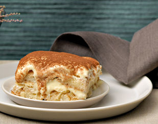

Apfel-Tiramisù
Zutaten
Zubereitung: ca. 45 Minuten
Kühl stellen: ca. 6 Stunden
Für 6 Personen
Form von 2 l Inhalt
2 dl Apfelsaft
1 Zitrone, abgeriebene Schale und Saft
1 Päckchen Vanillezucker
700 g Äpfel, gerüstet, geschält
4 Eigelb
100 g Zucker
500 g Mascarpone
4 Eiweiss, steif geschlagen
150 g Löffelbiskuits
6 EL Calvados oder Apfelsaft
2-4 EL Kakaopulver
Zubereitung
- Apfelsaft, Zitronenschale und -saft und Vanillezucker in einer Pfanne verrühren. Äpfel mit der Röstiraffel direkt in die Flüssigkeit raffeln. Kurz aufkochen, vollständig auskühlen lassen.
- Eigelb und Zucker rühren, bis die Masse hell und schaumig ist. Mascarpone darunter rühren. Eiweiss sorgfältig darunterziehen.
- Die Hälfte der Löffelbiskuits in der Form auslegen, mit Calvados oder Apfelsaft beträufeln. Die Hälfte der Apfel- und Mascarpone-Masse darauf verteilen. Mit restlichen Löffelbiskuits belegen, restliche Apfel- und Mascarpone-Masse darauf geben, glatt streichen.
- Tiramisù zugedeckt mindestens 6 Stunden kühl stellen. Vor dem Servieren mit Kakao bestäuben.
Nährwerte
Eine Portion enthält: 703 kcal, 11g Eiweiss, 45g Fett, 56g Kohlenhydrate.
